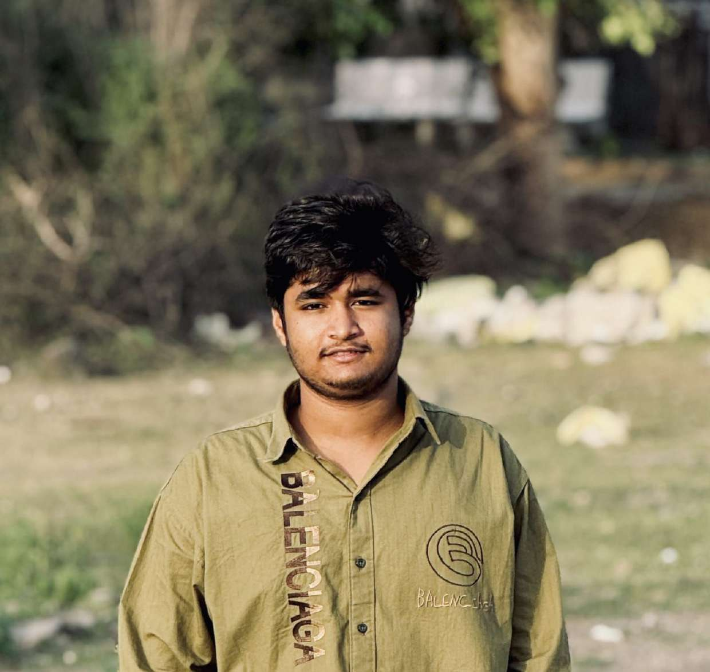

QUESTION 001↗
DATA SCIENCE
What stories are hiding in the data?
Exploring ways to turn raw information into clear, useful insight.
EXPLORING
YOUR PORTRAIT KEVALMade more personal
one photo at a time.
IT ENGINEERING STUDENT · DATA EXPLORER · BUILDER IN PROGRESS
BASED ON EARTH / OPEN TO IDEASI’m Keval, a B.Tech Information Technology student who likes asking “what if?” and then reaching for a keyboard.
I’m building my foundations across programming, web development, data science, and machine learning. I don’t claim to know it all — I’m here to keep learning, make useful things, and get a little better with every project.
A growing toolkit, not a finished list. I’m exploring how these pieces can solve real problems.
Finding patterns and teaching machines to spot them too.
Learning to break big problems into small, solvable ones.
Building accessible, responsive places for ideas to live.
A work in progress, by choice. I’m here to keep getting better.
Three directions I’m excited to explore. The best projects start with a question.
Exploring ways to turn raw information into clear, useful insight.
EXPLORINGGetting curious about models, patterns, and thoughtful applications of ML.
LEARNINGMixing code, clarity, and a little personality in the browser.
BUILDING SKILLSThese are learning directions, not finished project claims. More soon.
I’m always up for a conversation about ideas, tech, and what to build next.
kevaljani451@gmail.com KEVAL / STUDENT OF THE INTERNET / ALWAYS LEARNING